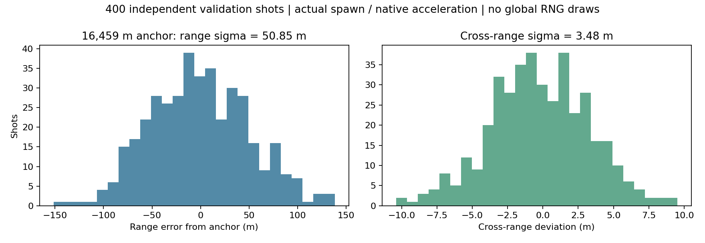
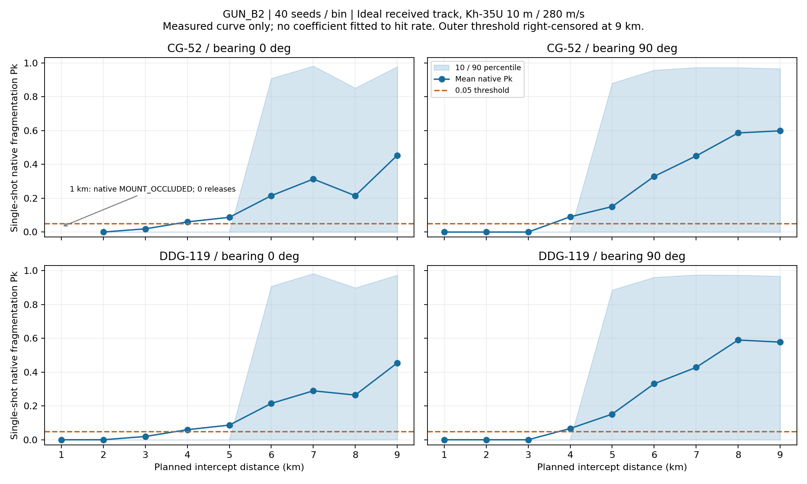
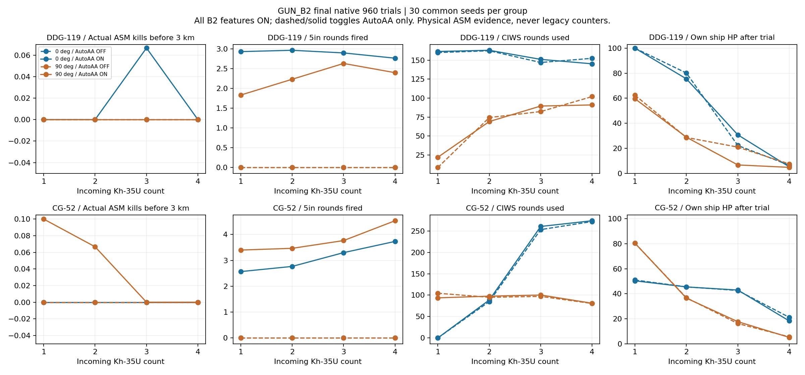

요청 기능·측정 완료. 새 ON 동작 차이와 근거리 효과는 검토 사항이다. 피해 계수·기대값을 결과에 맞추지 않았다.
보고서수치/모델시험 규약원시 실패 목록전체 화면 원본 색인



# GUN_B2 Phase 1 — 최종 구현·측정 보고
작성 2026-11-01 08:06 KST · FINAL_PHASE1_REPORT
기준: AIR_ORIGIN_A `4c5191753025406697520c63afcc97c116a83c4b6b924a4b605b49233c697eeb`. 시작 main cce180255e0f76b804a2ae6a3b6078aec2f9dea8 / gun-b2 HEAD831795e0…. 사용자 승인 PHASE1_START 1→5 순서로 진행했다. 새 게임 HTML SHA-256 `c48c2396932e07c8051b7a07d2da282951587283d768f2caa384a48936a0ed8b`.
**검토 사항:** 비교 가능한 기존60회 중 HP 악화 29회다. 새 신관·파편 기하/산포·사격 시점 변화와 기존 피해 추첨 분기를 함께 포함한 결과이며, 전부 RNG 차이라고 단정하지 않는다. 아래 ON 차이와 근거리 낮은 효과를 숨기거나 계수·기대값을 맞추지 않았다. main 병합/release/tag는 하지 않는다.
## 1. 변경과 보존
현재 관측 트랙·trunnion으로 기존 continuation solve를 수행하고 사통 권한·정렬·클리어런스를 재검사한다. 준비된 기회가 아닌 동안은 대기한다. 입력값 snapshot과 틱/해 객체를 함께 비교해 같은 틱의 관측·공분산·원점/속도·환경 변경에도 새 해를 쓴다.
5인치 모든 탄종(수상/NPC 수상 포함)에 serial+SIM_SEED_BASE+owner 전용 xorshift 산포를 적용했다. AIR에는 대칭 원형 포인팅 예산, 5인치 MFF에는 전방 환형 신호 누적·통과당 한 독립 난수 예산·2ms 지연과 몸체 파편 띠 membership을 세트로 적용한다. 기존 ET/안전거리/클러터 식과 기존 피해 함수·계수는 유지한다. 다른 함정의 새 대공 기능은 추가하지 않았다.
공칭823m/s, 추진/항력/질량/PN/Kappa/기동한계/배터리·SAM 신관/파편, RF/EKF, 저장 스키마, autoRange9km, ENVELOPE_TABLE_D120행은 보존했다. 새 GUN_B2_RANGE_TABLE과 링은 표시용이고 발사 판정에 연결하지 않는다. [계산·수치 계약](PARAMETERS.md), [시험 규약](PROTOCOL.md), [전체 diff](GUN_B2.diff).
## 2. 발사 정합
| 기능 | 회차/발사 | 평균 해 나이 s | 최대 해 나이 s | 최대 원점 차 m | 최대 관측 위치/속도 시차 m, m/s |
|---|---:|---:|---:|---:|---:|
| OFF | 8/43 | 0.670930 | 0.983333 | 0.499756 | 285.164089 / 4.328642 |
| ON | 8/25 | 0.000000 | 0.000000 | 0.000000 | 0.000000 / 0.000000 |
정합만 분리한 최초16회도 보존했다. 최종16회 OFF8은 같은4c519 입력/기록과 정확히 같다. 최종 ON25발은 현재 틱·관측 위치·속도·원점 정합을 모두 확인했다. 이 정합 수치를 곧 실제 표적 오차0이나 격추율 향상으로 해석하지 않는다. [최종 pair 원시](evidence/final-pairs/results.json), [입력 캐시 검증](evidence/release-cache/results.json).
### 90° 측방 표본
| 단계 / 함정 | OFF 평균±σ m (n) | ON 평균±σ m (n) |
|---|---:|---:|
| 최초 정합단독 / DDG | -2.129±4.267 (8) | -5.454±2.471 (3) |
| 최초 정합단독 / CG | 3.361±5.683 (7) | -5.768±5.577 (5) |
| 최종 전체기능 / DDG | -2.129±4.267 (8) | -0.945±1.376 (4) |
| 최종 전체기능 / CG | 3.361±5.683 (7) | 0.891±1.869 (6) |
각 칸은 같은2시드의 살아 있던 배정 표적에 대한 기폭 전 최소거리 측방 표본이다. 최초 정합단독은 당시 c1e2… 빌드의 순서별 증거이며, 최종 전체기능은925178b5…다. 모집단·기폭 끝점이 달라 단순한 독립 인과 개선율로 해석하지 않는다. 최종 신관은 CPA 전에 비행을 끝내므로 지표의 끝점도 다르다. 새 계수는 이 평균으로 선택하지 않았다. [전 표본/0° 포함 CSV](evidence/cross-comparison.csv).
## 3. 산포 앵커
초기400발 σ31.696m에서 시작했다. 16,459m native 유한차분으로 MV80%/고각20% 분산 배분(사용자 승인 SIM_TUNED)을 고정하고 허용구간 중앙 σ49.5m로 역산했다. 별도400발과 최종 재검증400발은 **사거리 σ50.849750m, 편향 σ3.481999m**, 평균 16457.992555m다. MV σ=.0021561842388671667, 고각 σ=.6484094047367095mrad, 선회 σ=.20mrad.
공칭823 유지, global RNG 소비0, 같은 serial/seed 반복 동일, native updater 착탄 비교0m. 한 분산 앵커가 두 σ를 유일하게 정하지는 않으므로80:20은 측정된 사실과 구별한다. 이번 환경에서 DTIC 원문을 새로 검증했다고 주장하지 않는다. 명중률/G7으로 σ를 역산하지 않았다.

수상360회는 각 함정·거리별30시드, OFF/ON 각180회다. 변하지 않은 HE/수상 경로를 source guard 아래 재사용했다. 실제 파일의 이전 HTML SHA를 보존한다.
| 함정 | 거리 km | OFF 명중/발사 | ON 명중/발사 |
|---|---:|---:|---:|
| DDG-119 | 5 / 10 / 15 | 30/30 · 30/30 · 30/30 | 29/30 · 19/30 · 14/30 |
| CG-52 | 5 / 10 / 15 | 30/30 · 30/30 · 30/30 | 29/30 · 19/30 · 14/30 |
표의 명중은 기존 checks.firstRoundHit이고 fixture 전체 pass와 구별한다. 원래15km 이동월드 검사의 meaningfulMovingFrame 조건은5/10km의 더 짧은 함 이동거리에서는 OFF/ON 모두 false다. 이를 완화하지 않고 raw에 남겼다. 수상 전체 fixture pass를360/360으로 주장하지 않는다. [수상 조건별 장부](evidence/surface-summary.json).
## 4. 신관·파편
모든 새 수치는 SIM_TUNED. 탐지 환형50~90°(중심70°, 반폭20°), 반경25m, 무장430m, 기존 ET+0.2s, 처리2ms다. 방위 의존 RCS×(12.5/r)^4×cos² 패턴 신호를 analytic sphere/cone 구간에서 적분한다. 통과마다 한 uniform으로 누적 budget을 정하며60Hz마다 다시 뽑지 않는다. 빔 공백은 범위 내 유지, 범위 이탈은 초기화한다.
파편은 기존 Gurney 속도로 상대운동 교차시간을 풀고 몸체90°±20° 안에서만 기존 밀도/관통/살상 계산을 적용한다. 밀도 면적은 같은 몸체계 R²·4πsin20°다. 초기 내부 후보의 관성계 입체각×몸체 반경 혼합을 바로잡은 후 거리/G7을 새로 측정했다. [좌표계 감사](DENSITY_FRAME_AUDIT.md). 원본 gunB1FragmentationPk/_wip88FragmentationPk/applyInterceptResult는 byte동일이다.
물리18항목, broad phase12,000조건 통과. 선형 고속 통과의1/30·1/60·1/120초에서 탐지/기폭 시점 동일,2ms지연·CPA 전 기폭·pass당 한 budget·빔 밖 미탐·안전거리/ET/클러터 보존을 확인했다. 이는 모든 곡선 기동에서 수치 오차가0이라는 주장은 아니다. native 계측6쌍은 결과/RNG 동일했고 실제 실행5함수 해시도 일치했다. [물리](evidence/physics/results.json), [native 신호·기폭 로그](evidence/native-trace/results.json).
## 5. 자연 탐지 G7 960회
DDG/CG ×0/90° ×1~4기 ×30시드419010~419039 ×AutoAA OFF/ON. **B2 기능은 전부 ON**, 표의 OFF/ON은 자동 함포 대공만 뜻한다. 매 회 새 page/context, 실제 자연 RF와 전체 fixed tick이다. 모든960 case/control/source·발사 장부·코어오류·현재 틱 정합을 확인했다.
기존 shipHits/gunPreCiwsKills/preCiwsKills는 알려진 혼입 때문에 실제 실적으로 인용하지 않았다. 실제 ASM 참조의 KILL/STRUCT_FAIL와 종료가 첫3km 진입 전에 일어난 고유 표적만 집계한다. 경계는1/60초 분해능이다. 함 피해는 HP 감소 회차이며 HP>0 생존과 물리 침몰 완료를 혼동하지 않는다.
| 함정 | 방위 | ASM | AutoAA | 3km 전 격추 평균 | 함포 평균 | CIWS 평균 | HP 감소 회차/30 | 평균 HP / 최소 | HP>0/30 |
|---|---:|---:|---|---:|---:|---:|---:|---:|---:|
| CG | 0 | 1 | OFF | 0.000 | 0.000 | 0.000 | 30 | 50.953 / 43.148 | 30 |
| CG | 0 | 1 | ON | 0.000 | 2.567 | 0.000 | 30 | 50.309 / 43.139 | 30 |
| CG | 0 | 2 | OFF | 0.000 | 0.000 | 84.933 | 25 | 45.481 / 9.829 | 30 |
| CG | 0 | 2 | ON | 0.000 | 2.767 | 88.667 | 25 | 45.431 / 9.830 | 30 |
| CG | 0 | 3 | OFF | 0.000 | 0.000 | 253.133 | 30 | 42.604 / 21.016 | 30 |
| CG | 0 | 3 | ON | 0.000 | 3.300 | 260.500 | 30 | 42.938 / 21.014 | 30 |
| CG | 0 | 4 | OFF | 0.000 | 0.000 | 271.967 | 30 | 21.133 / 0.000 | 25 |
| CG | 0 | 4 | ON | 0.000 | 3.733 | 273.800 | 30 | 18.281 / 0.000 | 25 |
| CG | 90 | 1 | OFF | 0.000 | 0.000 | 104.433 | 10 | 80.362 / 37.821 | 30 |
| CG | 90 | 1 | ON | 0.100 | 3.400 | 93.667 | 10 | 80.364 / 37.800 | 30 |
| CG | 90 | 2 | OFF | 0.000 | 0.000 | 94.933 | 29 | 36.782 / 0.000 | 29 |
| CG | 90 | 2 | ON | 0.067 | 3.467 | 97.533 | 29 | 36.475 / 0.000 | 29 |
| CG | 90 | 3 | OFF | 0.000 | 0.000 | 97.033 | 30 | 16.167 / 0.000 | 21 |
| CG | 90 | 3 | ON | 0.000 | 3.767 | 100.267 | 30 | 17.674 / 0.000 | 22 |
| CG | 90 | 4 | OFF | 0.000 | 0.000 | 80.467 | 30 | 5.555 / 0.000 | 13 |
| CG | 90 | 4 | ON | 0.000 | 4.533 | 81.033 | 30 | 5.113 / 0.000 | 12 |
| DDG | 0 | 1 | OFF | 0.000 | 0.000 | 160.067 | 0 | 100.000 / 100.000 | 30 |
| DDG | 0 | 1 | ON | 0.000 | 2.933 | 161.467 | 0 | 100.000 / 100.000 | 30 |
| DDG | 0 | 2 | OFF | 0.000 | 0.000 | 162.400 | 11 | 80.139 / 13.410 | 30 |
| DDG | 0 | 2 | ON | 0.000 | 2.967 | 163.033 | 12 | 75.485 / 6.170 | 30 |
| DDG | 0 | 3 | OFF | 0.000 | 0.000 | 146.967 | 30 | 22.254 / 0.000 | 23 |
| DDG | 0 | 3 | ON | 0.067 | 2.900 | 151.067 | 28 | 30.762 / 0.000 | 25 |
| DDG | 0 | 4 | OFF | 0.000 | 0.000 | 152.467 | 30 | 6.483 / 0.000 | 13 |
| DDG | 0 | 4 | ON | 0.000 | 2.767 | 145.200 | 30 | 5.191 / 0.000 | 10 |
| DDG | 90 | 1 | OFF | 0.000 | 0.000 | 8.600 | 12 | 62.427 / 0.000 | 26 |
| DDG | 90 | 1 | ON | 0.000 | 1.833 | 22.100 | 13 | 59.571 / 0.000 | 27 |
| DDG | 90 | 2 | OFF | 0.000 | 0.000 | 74.400 | 23 | 28.660 / 0.000 | 16 |
| DDG | 90 | 2 | ON | 0.000 | 2.233 | 69.100 | 23 | 28.855 / 0.000 | 16 |
| DDG | 90 | 3 | OFF | 0.000 | 0.000 | 82.267 | 25 | 20.942 / 0.000 | 12 |
| DDG | 90 | 3 | ON | 0.000 | 2.633 | 89.567 | 29 | 6.693 / 0.000 | 11 |
| DDG | 90 | 4 | OFF | 0.000 | 0.000 | 102.000 | 28 | 7.517 / 0.000 | 6 |
| DDG | 90 | 4 | ON | 0.000 | 2.400 | 91.000 | 29 | 4.767 / 0.000 | 6 |

기존4c519의 같은 표적1기·같은15시드씩60회와 비교했을 때 HP가 낮아진 사례는 29건이다. 전부 [회차별 비교](evidence/effects-summary.json)의 matchedBaseline60/worseMatchedHpCases에 남겼다. 사용자에게 이미 승인받은 이전 원점 복구의 DDG90 seed419023 한 건을 새 악화 전체의 승인으로 확대하지 않는다. 과거 C9의 전체 행렬을 이번 OFF 기준처럼 재사용하지도 않는다.
## 6. 단발 Pk와 링
이상적인 현재 관측, Kh-35U10m/280m/s, 계획 요격거리1~9km×40시드592001~592040×함정2×방위2=1440시도/1400발이다. CG선수포1km40시도는 기존 MOUNT_OCCLUDED로 미발사이며40비명중으로 세지 않는다. 초기 발사거리와 실제 기폭거리도 raw에 함께 남겼다.
| 함정/방위 | 1km | 2 | 3 | 4 | 5 | 6 | 7 | 8 | 9 |
|---|---:|---:|---:|---:|---:|---:|---:|---:|---:|
| CG/0° | 미발사 | 0.0000 | 0.0190 | 0.0599 | 0.0870 | 0.2149 | 0.3131 | 0.2147 | 0.4536 |
| CG/90° | 0.0000 | 0.0000 | 0.0000 | 0.0901 | 0.1505 | 0.3290 | 0.4497 | 0.5857 | 0.5983 |
| DDG/0° | 0.0000 | 0.0000 | 0.0194 | 0.0594 | 0.0866 | 0.2148 | 0.2892 | 0.2641 | 0.4540 |
| DDG/90° | 0.0000 | 0.0000 | 0.0000 | 0.0665 | 0.1515 | 0.3309 | 0.4276 | 0.5894 | 0.5771 |

표는 실제 native 파편 Pk의 평균(미탐/띠 밖 등0 포함)이다.10/90%는 그림과 [CSV](evidence/range-intercept/curve.csv), 실제 KILL/손상 결과는 [결과 내역](evidence/range-outcomes.json)에 있다. 실제 자연 탐지·사통·기동은 G7이 따로 측정한다.
**외측0.05 하강 지점을9km까지 찾지 못했다.** 링은 우측 검열 ≥9km의 검토용 제안이며 확정 최대 사거리나1~9km 전 구간의 유효성을 뜻하지 않는다. 특히1~3km 효과가 낮다. native 로그에서 근거리 탐지+2ms 후 파편 도달 방향이 좁은 띠 밖이 되는 사례를 확인했다. 탐지 시점·처리·파편 도달의 관계를 검토할 항목으로 남기며 명중률에 맞춰 수치를 고치지 않았다.
자동9km와 유효≥9km(SIM)를 두 줄로 표시한다. 같은9km 위치의 선은 겹칠 수 있지만 두 의미를 라벨로 구별한다. 최종PC/폰 메인·PiP 글리프/간격 검사8건 통과. [최종 라벨](evidence/label-final/results.json).
## 7. 회귀와 기대값
기존 기대값·허용치 추가 변경0. OFF/ON 각각 도메인378+paired42=420은 이미 승인된 AIR5건을 원래4c519 manifest로 검증한 뒤 정확 비교해 통과했다.120초 무표적/전투 해시도 기존 승인 값과 같다. 원래 검사에 남는4raid+1combat 불일치는 별도 원시 파일에 유지했다. [승인 대조](evidence/existing-approval-reconciliation.json).
| 경로 | 실행 조건 | 결과 | 근거 |
|---|---|---|---|
| 도메인420 / 120초 idle·combat | OFF/ON 각각 | 기존 승인과 정확 일치 | 새 기대값 없음 |
| release300 OFF | 300조건 | 전체 row/event/궤적 정확 동일=True | 실제4c519 기준 |
| natural28 OFF | 28조건 | 전체 row/event/궤적 정확 동일=True | 실제4c519 기준 |
| release300 ON | 300조건 | 전체 row/event/궤적 정확 동일=True | 실제4c519 기준 |
| natural28 ON | 28조건 | 전체 row/event/궤적 정확 동일=True | 실제4c519 기준 |
| OFF UI88 / WebGL | 88/88 | 8발, pass=True | OFF 전체10작업실행 |
| ON UI88 / WebGL | 88/88 | 8발, pass=True | ON UI88실행 +변하지않은9공통UI작업근거재사용 |
검증 시간 증가를 지적한 사용자 요청 후, 동일 canonical ON MapDUI213 통과분을 가진 중복 rawUI 실행을 중단했다. 같은 기존 이관의ON edges는 별도 lane에서 완주했다. GUN을 요청하지 않고 AutoAA가OFF인 공통UI/EMCON정책은 완료된OFF검사와byte동일소스·보호경로 근거로 재사용했다. 새 GUN UI76/신관/산포, 필수960, SAM300/RF28/WebGL8/EW/H3는 유지했다. 실행하지 않은 항목을 fresh ON통과로 표기하지 않는다. [부하 정리 기록](evidence/validation-load-reduction.json), [공통UI재사용근거](evidence/unchanged-ui-reuse.json).
원래 PIP_B UI의85/88은 삭제된 legacy cursor lock entry를 쓰며, 현재 canonical UI88은 native mapPrecisionCommandA로 통과한다. MAP_D의AIR 일괄 거부/CG22km 기대는 B1의 기존 명시 이관(AIR 기본80m/s 불확실성 거부,Mod4 24km)을 그대로 재실행했다. EW 원시24/28개 inventory 차이는 기존 정확 predicate로 분리하며 나머지 전체 export는 같다. [EW 대조](evidence/ew-reconciliation.json).
새 ON 차이는 별도 [원시 실패 CSV](evidence/regression-failures.csv), [42항목 분류와 근거](DIFFERENCES.md)와 아래에 공개한다. 원본 null-event crash도 보존하고, private continuation에서는 None을FALSE로 기록해 나머지 단언까지 실행했다. 기대값을 통과하도록 바꾸지 않았다.
- native36: OFF36/36, ON21/36. 산포 없는0.35m 기대12개, 원래 축상CPA/friendlySAM 탐지 기대2개, 정확r=0 기폭에서 방향 없는 파편 강제 격추 기대1개가 달라졌다.
- geometry5: OFF5/5, ON3/5. 정확CPA t=.5 기대2개는 최초 신호+지연 모델과 다르다.
- physical adapter4: OFF4/4, ON1/4. 옛 축상HARPOON probe가 새 환형 빔 밖이라 이벤트/종료/사후기록3개가 없다.
- B1 UI76: OFF76/76, ON72/76. CG의MAIN/PiP×PC/폰 단발4개는 새 대칭 창 때문에 보류한다. 정합만 켠 분리실험은 발사,창만/전체는 미발사였다. 수직오차1.67~1.69m는 기존7.5m 예산에는 들지만 새1.5floor×.78=1.17m를 넘는다. pending은 이후 TRACK_SUPPORT_BLOCKED로 끝난다. 준비 단계에서 재계산을 더 허용한 private 실험도 복구하지 않아 채택하지 않았다. [분리 원인·타임라인](evidence/ui-single-cause/cause.json).
그 밖의 새 실패는 regression-summary.json과 실제 job exit 목록에 남긴다. 알 수 없는 차이를 정상으로 자동 분류하지 않는다. 새 기대값 갱신과 링 확정은 PR에서 사용자 검토 사항이다.
## 8. 비용·결정성·출처
- DDG_119_LATE_FLIGHT_IIA natural 반복 정확=True; host fixed tick ms {"n": 2473, "mean": 5.60820865346698, "p95": 7.799999997019768, "max": 222.29999999701977}; 실제 재계산 ms {"n": 48, "mean": 1.7208333338300388, "p95": 2.7000000029802322, "max": 3.7999999970197678}
- CG_52_LATE_TICONDEROGA natural 반복 정확=True; host fixed tick ms {"n": 2474, "mean": 5.8842764753267085, "p95": 8.800000011920929, "max": 193.6000000089407}; 실제 재계산 ms {"n": 108, "mean": 1.5268518512171727, "p95": 3.0999999940395355, "max": 5.800000011920929}
성능값은 이 헤드리스 호스트의 동시 검증 부하·관측자 비용을 포함한 fixed-tick CPU 측정이다. 렌더/GPU 또는 실제 폰 FPS가 아니다. 준비 단계 재시도 수와 호스트시간도 전체 회차 CSV에 남겼고 실제 발사 수만큼만 solve한다고 가정하지 않았다.
거리1440시도 470.3s. G7 worker별 비용은 evidence/g7/worker*-complete.json, 기존 회귀 15188.0s다. 서로 겹쳐 실행했으므로 합을 전체 벽시계 시간으로 해석하지 않는다. 초기 과도한 병렬/AST 자원 실패는 resource-retry에 보존했고 최종 조건을 제외하지 않았다.
물리 측정 HTML `925178b5b06bcd81304f6b98da4436fda4fd85eaf7ea8de3813a981981f0da71`, 최종 UI/table 내장 HTML `c48c2396932e07c8051b7a07d2da282951587283d768f2caa384a48936a0ed8b`. 빌드 시 실제 native6함수/공장·compiled spec/산포·runtime 지문을 대조했고 이후 추가는 측정표와 읽기 전용 링뿐이다. 함수/상수가 다른 표는4종 private 음성검사에서 출력 전에 거절했다.
281보호함수,ENV_D120행,기존 피해/SAM/RF/EKF/저장 함수와 원본B1/AIR HTML은 그대로다. 승인 범위 변경을 제거한 전체main이4c519 원문과 byte동일이며, 다른 packed assets/manifest/HTML 외피도 확인했다. [정적 감사](evidence/static.json), [포장 불변식](evidence/product-invariants.json), [측정 지문](measurement-build.json).
내부 v1(929523d6…)와 입력캐시 보완 전v2(97089f4b…)의 미완료 행렬/이전 성과는 별도 archive에 두고 최종960/1440에 섞지 않았다. 변경되지 않은 HE/격리SAM/OFF 경로의 재사용은 실제 이전 SHA와 사용 조건을 남겼다.
## 9. 인계
새 HTML과 보고서 ZIP은 분리한다. 모든 원시 수치/CSV/로그·스크립트·그림과 대표 화면을 보고서에 넣고, 중복된 전체 회귀 PNG는 원본을 저장소에 보존해 MEDIA_INDEX.tsv에 경로/해시/포함 여부를 적는다. ZIP100MB 제한 때문이다. source/checksum/CRC/멤버 byte를 검증한다. 원격 영수증은 산출물 push 뒤 후속 커밋에 추가하며 ZIP는 그 산출물 커밋의 고정본이다.
남은 판단은 근거리 탐지-지연-파편 기하의 게임 효과, 새 ON 기대값 검토, 외측 임계 미확정 링이다. 수치를 임의로 보정하지 않는다. gun-b2만 push하고 PR을 열며 병합은 사용자에게 맡긴다.
원격 readback 영수증은 산출물 push 후 별도 커밋에 추가됩니다. ZIP는 해당 산출물 커밋의 고정본입니다.